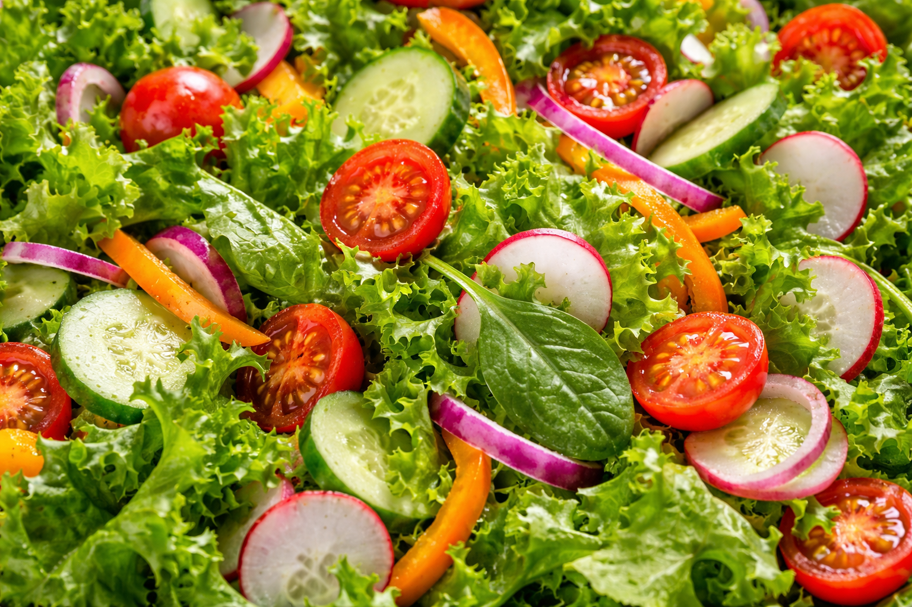
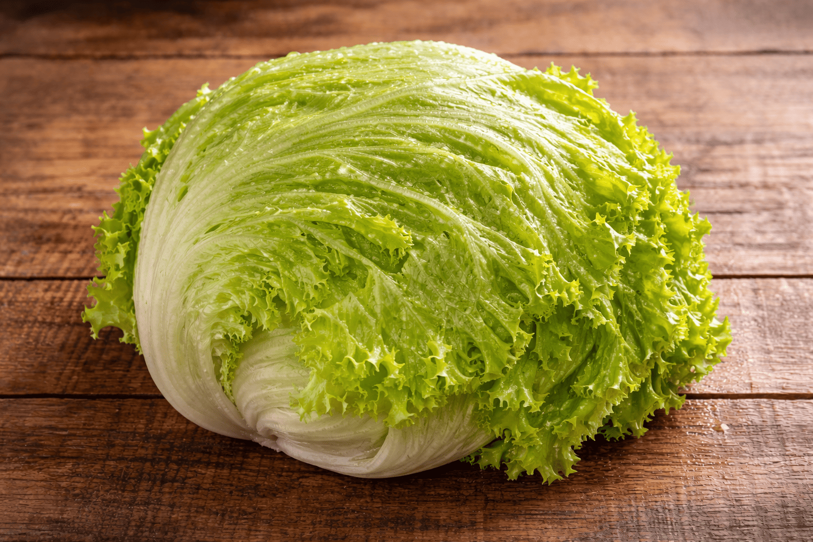

Ingrédients de la salade César
Préparation détaillée
⏱ 25 minPréchauffer le four à 165°C pour préparer les croûtons.
Couper le pain en petits dés puis les mélanger avec le beurre fondu avant de les faire dorer au four.
Faire revenir les câpres dans un peu d’huile jusqu’à ce qu’elles deviennent croustillantes.
Préparer la sauce en fouettant les jaunes d’œufs avec le jus de citron, l’ail, les anchois et les câpres hachées.
Verser progressivement l’huile végétale puis l’huile d’olive pour obtenir une sauce lisse, épaisse et crémeuse.
Laver et couper la laitue romaine, puis préparer le parmesan en copeaux ou râpé selon la texture souhaitée.
Faire cuire le bacon jusqu’à ce qu’il soit bien croustillant, puis le couper en morceaux.
Mélanger la romaine avec les croûtons, le bacon, le parmesan et la sauce César, puis servir immédiatement.
Composition personnalisée
Ta composition : Aucune
Meilleures associations de saveurs
- La Classique : Parmesan + croûtons maison + bacon croustillant.
- La Fraîche : Sauce plus citronnée + romaine bien froide + copeaux de parmesan.
- La Gourmande : Poulet grillé + bacon + sauce crémeuse.
- La Plus Chic : Œuf mollet + parmesan + câpres croustillantes.
Checklist de la salade parfaite
0 / 5
Temps utiles
Choisis le temps correspondant à une étape :